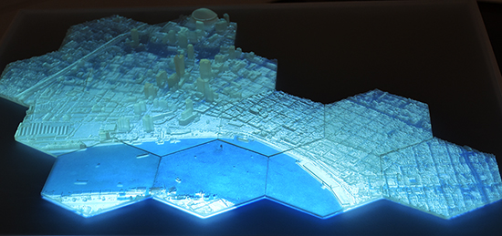
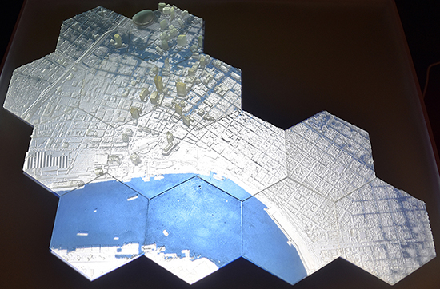
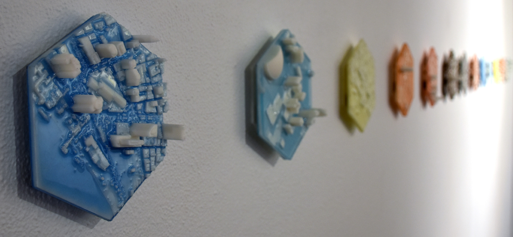
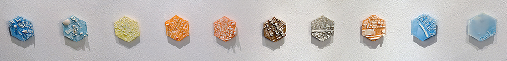

2019, Tabletop Installation

2019, Installation w/ Augmented Reality


Shifting Datum is a series of works visualizing sea level rise projections and flood simulations for New Orleans. The 3D printed models of the city were modeled in GRASS GIS and Rhino from the U.S. Army Corps of Engineers 2012 Lidar Survey of New Orleans. Exhibited at the Baton Rouge Gallery in May 2019.
Collaborator: Brendan Harmon
Students: Shei Jae Gothico (AR Programing), Nnamdi O Anyaele (Animation), Keyvan Korani (MR Programing)
Exhibition
2019 May, Baton Rouge Gallery, LA
...